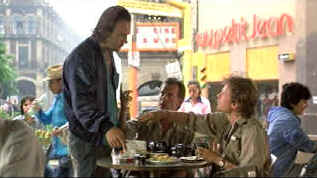

| Salvador (SE) /B+,B+ |
| MGM/1985/123/ANA 1.85 |
Spending
two hours awash in the throbbing waters of Salvador is a roiling experience. It’s
raw filmmaking. There seems to be little compromise in the film’s content. Those bodies lying so
still on the pile of ashes at the dump are blatantly unnerving.
Down on his luck journalist Richard Boyle is desperate for money. His wife
has just left him in disgust. He decides to return to El Salvador where he has successfully
traveled the waters of international journalism. Traveling with his friend Doctor Rock, Boyle tries
to pick up the life left interrupted by some abrasive and impolitic choices that led him to flee
the country. Boyle settles back in with a woman he loves, seeks out stringer status with a number
of news agencies, and wreaks havoc on the lives around him. Through Boyles eyes, director/writer
Stone presents his one sided view of the political situation.
Salvador is just one of those little disposable chess pieces of
Central America. It’s almost like it was a reason d’etre for the American undercover forces in
the late seventies and early eighties. I have admired Oliver Stone’s opinionated work for years.
At least he has the balls to stand behind what he believes in, to run with his vision. You don’t
have to agree with him to admire his tenacity. It’s the tenacity that infuses the filmmaking with
greatness. There’s a sense of eruption all around the work. In Salvador, Stone has a
sad-eyed low life of the dreg world as protagonist, yet manages to find large measures of humanity
in this overbearingly obnoxious photo journalist Richard Boyle. Disheveled and desperate, Boyle
manages to taint everything he touches, whether his motivations are good or selfish. He antagonizes
everyone around him. He’s like the little hairs lodged in your shirt after a haircut. You keep
brushing them off, but until you shower, there’s no end to the irritation. There’s
very little waste to Salvador. Other than an overly long Archbishop Romero sermon, the only
other major fault with Salvador is some of the caricaturing. Whatever faults you may find
with the one way Salvador, you can't deny its power.
For a "shoot on the run" low budget production, Salvador looks
terrific. This is the first of Stone's Robert Richardson collaborations. Richardson's lens magic
makes Salvador look like an "A" production. The excitement, the danger, the
seediness are all captured with visual verisimilitude.
James Woods is perfectly cast as Richard Boyle.
Woods
does sleaze so well it makes your flesh crawl. The
actor's kinetic screen energy makes Boyle twitch with disreputable charm. The man’s on the edge for
every cunning minute of the film; his sweat smells right through the audio system. You
never fail to completely believe this screen portrayal. Jim Belushi plays Doctor Rock with big
strokes. As the slightly crazy sidekick who is improbably seduced by Boyle's visions of the good,
easy, drug and sex life, Belushi is effectively unpredictable. John Savage is excellent
playing the photo-journalist with aspirations to greatness. Jorge Luke has a brief convincing
moment as the twisted Colonel Figueroa. Tony Plana is rather too cartoonish as Major Max, the right
wing military leader.
 |
| Reunion in San Salvador. ©MGM |
An excellent transfer in every aspect. The image is sharp, fine details
well-defined and no edge enhancement noticeable. Color saturation is consistently powerful. Various
lighting is well balanced and contrast range is strong. Shadow detail in the darkest scenes reveals
the director's intent. Blacks are rich and skin tones have a nice natural range.
Charles Kiselyak, a veteran DVD documentary maker, has written and
directed Into the Valley of Death about the making of Salvador. Interviews with
Stone, Woods, Belushi and former American Ambassador Robert White form the core of the work,
intercut with scenes from the film. The scenes fromt he film add too much padding to the
documentary, but overall, it's fascinating material. The Oliver Stone commentary is an interesting
mix of production details and anecdotes and surrounding history. Stone has done quite a few
commentaries for his films and he has become more and more natural and comfortable with the
process. There are fairly long gaps in the commentary, but overall, the comments are packed with
information and well worth the wait. |
|
|
|

Selections from the Feature Archive
include articles on Akira Kurosawa, Frank
Darabont, Blonde Bimbos, Hollywood Street Gangs, or Vietnam: The
Hollywood Pariah, and many more....
Redeeming
the Writer:
A Conversation with Frank Darabont

Three Kings/A-,A
Three Kings speeds ahead like a formula one race car on the fast track to reckless
fascination.

I just love to watch the FBI Warning and that isn't enough, I am
treated to a graphic designer's wet logo dream.
FBI Warning/
Logo Wars

The
Movie Poster Archive includes extensive poster images from the films of stars like Susan Hayward,
Kirk Douglas, Katharine Hepburn and many more. Our featured star is Gregory Peck


Home of The American Film Institute.
 A huge
selection of French movie posters with images galore. Don't miss this site if you ate interested in
lovely French posters. A huge
selection of French movie posters with images galore. Don't miss this site if you ate interested in
lovely French posters.
 ETEKNet is the web's only 24-hour, totally FREE source for all your home theater,
DVD, Dreamcast, PC, and Networking tech support needs! ETEKNet is the web's only 24-hour, totally FREE source for all your home theater,
DVD, Dreamcast, PC, and Networking tech support needs!
 Large variety of movie posters for sale now specializing in Polish and Japanese paper.
Easy interface and a Soho gallery storefront. Large variety of movie posters for sale now specializing in Polish and Japanese paper.
Easy interface and a Soho gallery storefront.

Excellent resource for movie review links, with many early looks.

A great place for movie lovers and techies to visit for exchange of
ideas. New speedy interface is an inspiration for more dialogue. Home of Robert( Obi) George's DVD
reviews.
|